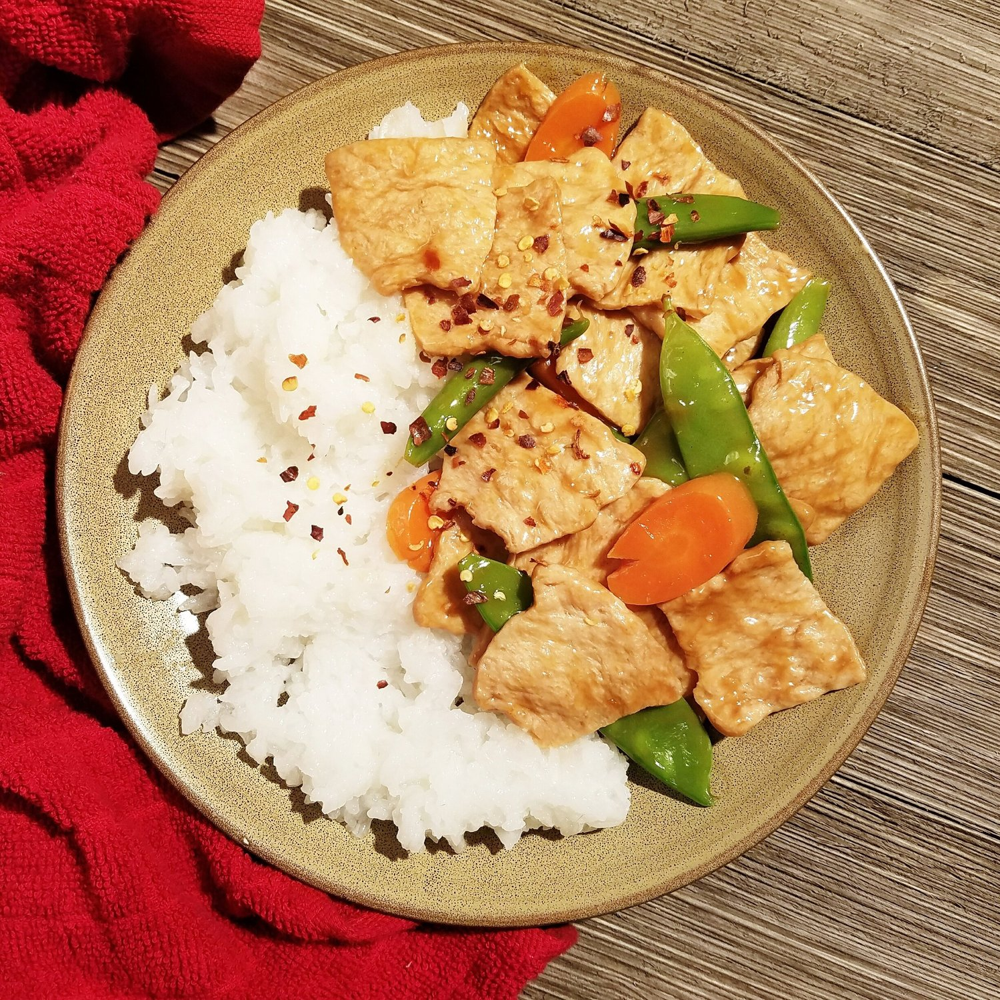

Vegan Orange Chicken

Yes, vegan orange chicken can be done. If you're looking for a healthy alternative for the super-fried Chinese restaurant classic, you've come to the right place! This simple vegan orange chicken recipe is oil free, light, and so completely delicious.
So a little backstory. I've been trying to get more creative in the kitchen lately. Why? Because I've been cooking with someone instead of just for myself. When I cook for myself, I get into the rhythm of just making the same things over and over. You know that feeling, right? Meh, it keeps me happy. But I have to say it's been amazing getting more creative with them.
You may be asking who it is. OKAY I'll stop being vague; let me introduce you to my boyfriend. World, meet Nick (imagine his face here and a handshake, just work with me).
Now that we're all familiar...onto the food! This weekend we decided to make a veganized orange chicken dish. Nick is not vegan, but he likes orange chicken and is open to the idea. And I sure as heck love Chinese food myself, so why not make it! For the "meat" I used a mock meat made from soy. You can find these types of dehydrated strips at Asian markets or online. You just hydrate, and go! The sauce...is so magical. Sweet, thick, with a slight kick. Honestly I would drink it. Too weird? You know you'd do it too. Even if you don't have the mock meat, you can use it to toss vegetables, tofu, or tempeh in. Or all of the above! It's worth making at least the sauce. Especially since it is completely vegan, oil free, and easy to make!
Vegan Orange Chicken
Serves: 4-6
-
2 cups dehydrated soy strips
-
1 lb snap peas (or snow peas)
-
3 large carrots, sliced
-
3 navel oranges
-
2 TBSP soy sauce
-
2 TBSP rice vinegar (or white vinegar)
-
1/4 cup brown sugar
-
3 garlic cloves, minced
-
1 tsp grated fresh ginger
-
1 tsp red pepper flakes
-
salt and pepper to taste
-
2 TBSP cornstarch + 2 TBSP water
First rehydrate the soy strips. Place in a bowl of water and let sit for at least 45 minutes. After hydrating, strain from the water and press out any excess liquid.
Boil a pot of water, then toss in your snap peas and sliced carrots. Lower the heat and let cook while you prepare the orange sauce. Keep an eye on the boiling vegetables and strain from the water once softened.
Juice your navel oranges. It should wield approximately 3/4 cup orange juice. In a large sauce pan, mix the orange juice with the soy sauce, rice vinegar, brown sugar, garlic, ginger, red pepper, and salt/pepper. Bring to a low heat, stirring often. Once slightly simmering, slowly pour in the cornstarch/water slurry. You may not need all of the cornstarch mixture, so start by only adding 1/4 of the mix at a time, then stir and let thicken. If not thick enough, add more of the mix and repeat until the sauce is the thickness you desire.
Once the sauce is prepared, add the strained soy strips and vegetables to the pan. Lightly toss to incorporate the sauce and flavors, approximately 4-5 minutes. Remove from heat and serve with rice.